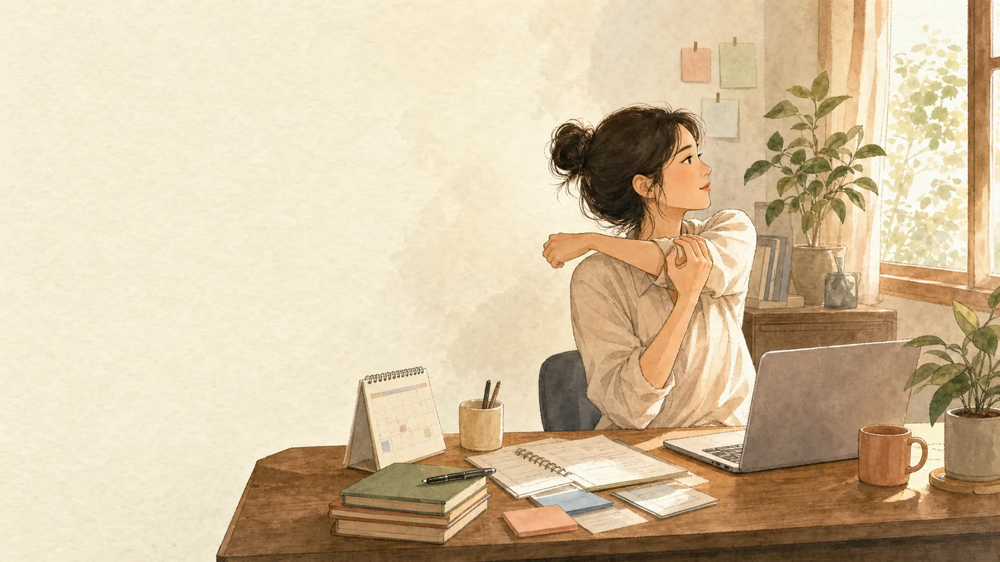
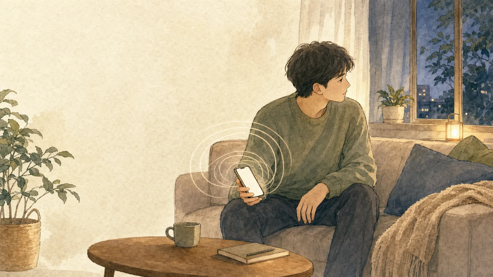
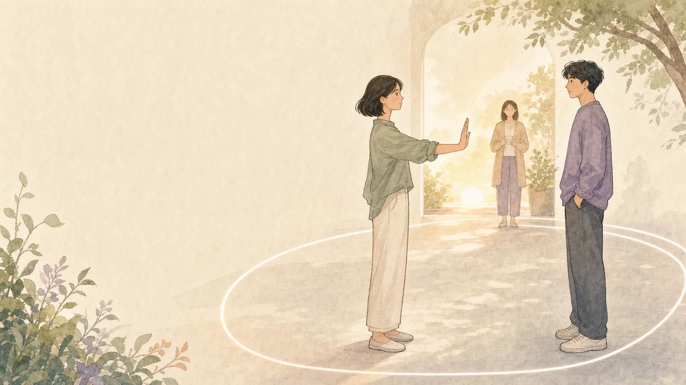
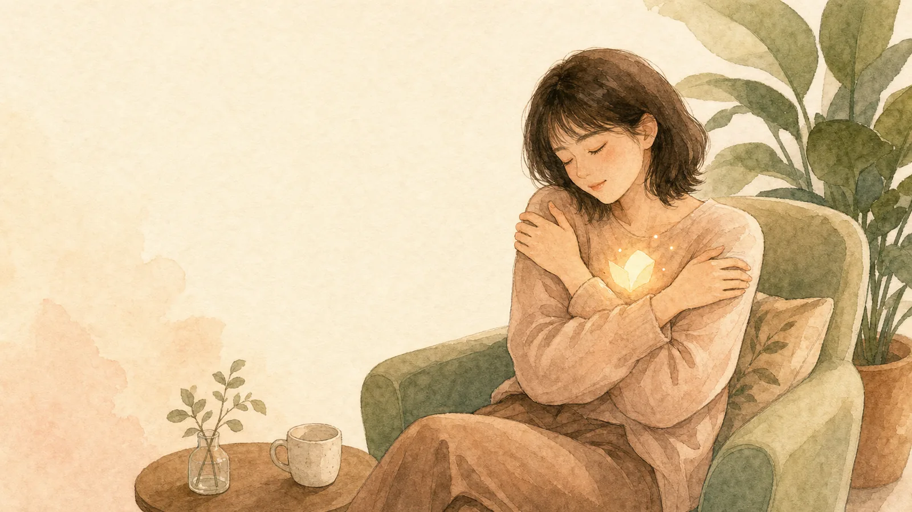

咖啡哪有工作苦
從職家平衡、職場 PUA、拒絕、霸凌、職業倦怠到同情疲勞，陪你看見工作裡那些說不出口的累。
進入系列頁 依照職場困擾找文章系列專區
系列頁不是文章列表，而是一個主題入口。你可以像翻開一本書一樣，依照順序慢慢讀。

從職家平衡、職場 PUA、拒絕、霸凌、職業倦怠到同情疲勞，陪你看見工作裡那些說不出口的累。
進入系列頁 依照職場困擾找文章
從短影音、咖啡因、孤獨、拖延、孩子黏螢幕到 AI 依賴，理解停不下來背後的心理需求。
進入系列頁
從性騷擾、身體自主權、跟騷、數位性別暴力、權勢操控到男性受害者，陪你重新理解界線。
進入系列頁
心理師的心靈雞湯
不是口號式鼓勵，而是從心理觀點談脆弱、勇敢、自我接納與真實關係。
進入系列頁
收錄關係中的不安全感、情緒勒索，以及面對社會事件時的自我照顧。
進入分類頁